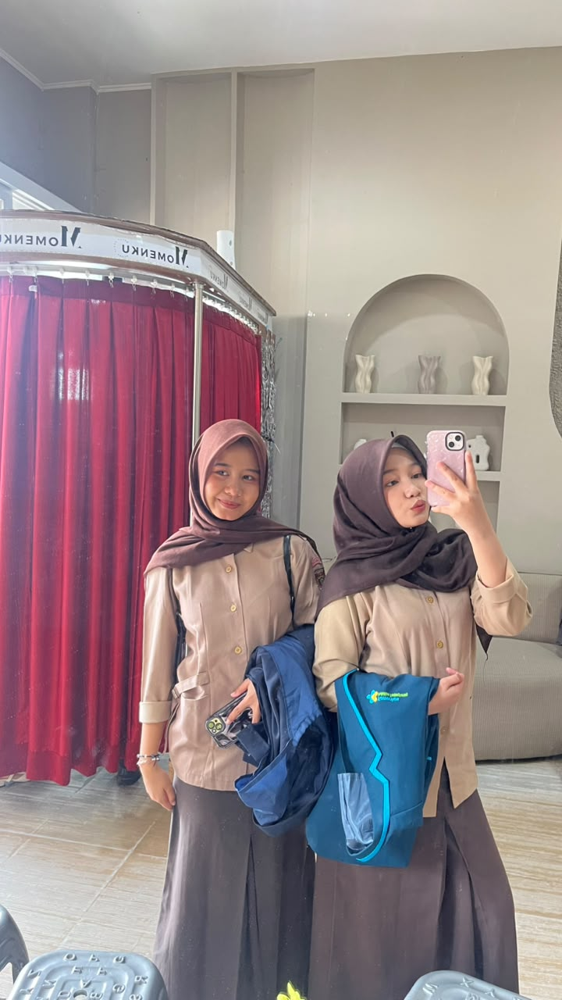
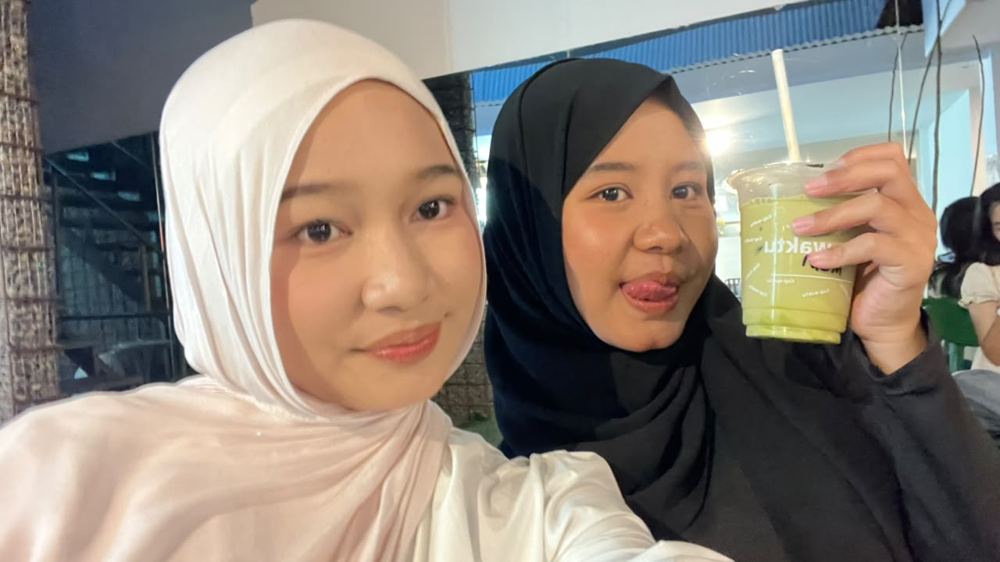
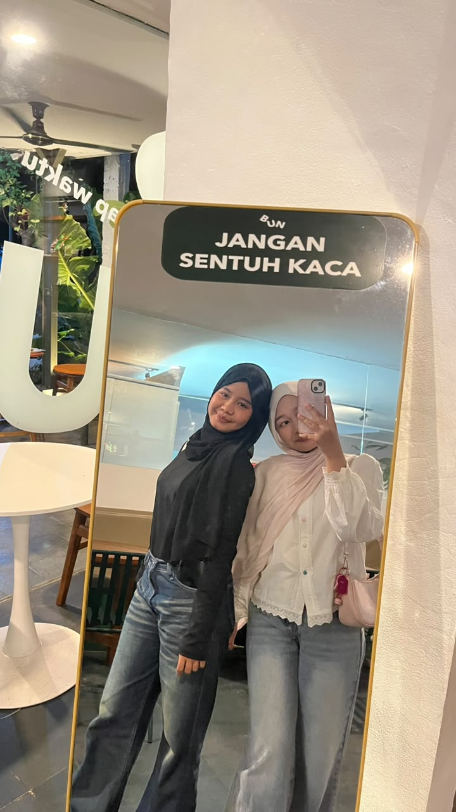
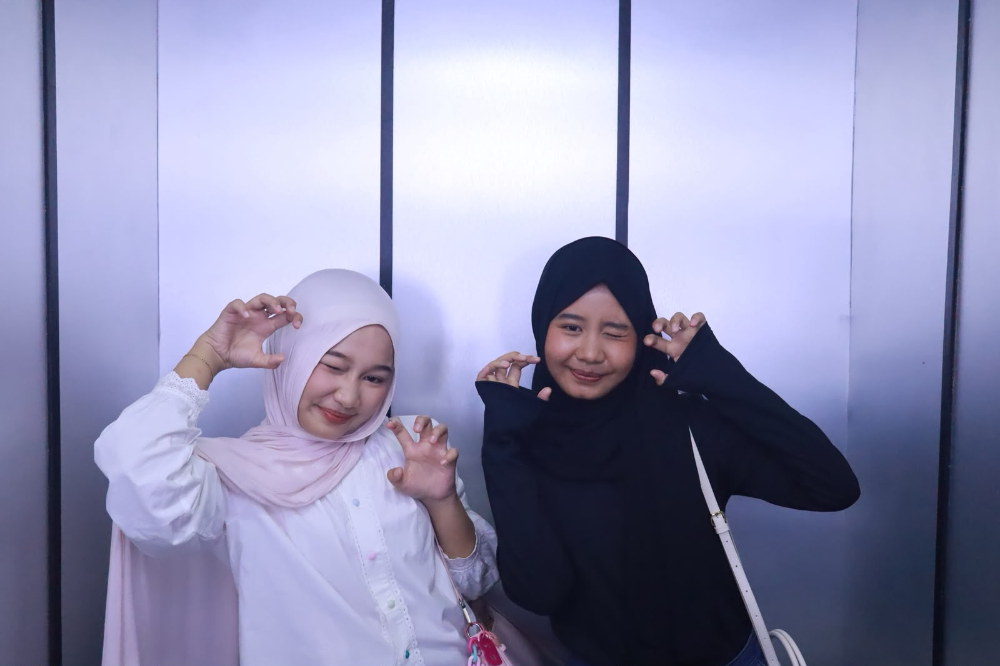

Finally 19, pretty girl!! 🧁
Welcome to level 19, Njuttieee! 🎂 Semoga di umur yang baru ini, hidup kamu makin happy, rezeki makin lancar, makin cantik (padahal udah), and surrounded by people who genuinely love you. ♡
I hope all the little things you've been wishing for slowly come true. Jangan sering-sering sedih yaa, pretty girl. You deserve so much love and happiness! 🥹💗
Stay silly, stay cute, stay being YOU! Jangan berubah jadi orang lain cuma buat bikin orang suka. You're already special in your own way. 🎀
✿ A LITTLE GALLERY OF YOU ✿
A few little moments of someone who deserves all the love in this universe. ♡




A LITTLE NOTE FOR YOU ♡
There's something special waiting for you inside... 🎀
To my forever girl, Njutt. ♡
Happy 19th birthday, Njuttieee. 🎂💗 Honestly, sometimes I still can't believe we've come this far. Dari yang dulu masih anak SD, masih bocil yang belum ngerti banyak hal, sampai sekarang kita udah 19 tahun dan mulai sibuk berjuang buat masa depan masing-masing. Like, look at us now... we're growing up, huh? 🥹
Kalau dipikir-pikir, kita udah ngelewatin banyak banget hal bareng. Sekolah bareng dari SD, lanjut SMP, sampai SMA. We've seen each other grow, change, cry, get mad, laugh over the dumbest things, and go through so many problems. Ada masa kita happy banget, ada juga masa semuanya terasa berat. Tapi somehow, we made it through those days.
Kita juga bukan orang yang selalu ngerti satu sama lain. Sometimes ego kita sama-sama tinggi, sometimes kita punya cara pikir yang beda, and sometimes we probably hurt each other without even realizing it. Tapi dari situ kita belajar, kan? Belajar buat ngerti satu sama lain, belajar buat sabar, belajar kalau bertahan dalam hubungan apa pun itu nggak selalu tentang siapa yang benar, tapi juga tentang mau saling memahami.
And all those little talks about our family... the complaints, the tears, the things we couldn't easily tell other people. Kita pernah saling dengerin keluh kesah, saling cerita tentang hal-hal yang bikin capek, bahkan saat kita sendiri juga lagi nggak baik-baik aja. Maybe we couldn't always fix each other's problems, but at least we had someone to listen. And I'm really grateful that we had each other. ♡
Now we're in college, trying to survive our own battles, chasing different dreams, and learning how life really works. Kita udah nggak selalu ada di tempat yang sama atau punya kesibukan yang sama kayak dulu. But even if life takes us to different paths, a part of me will always be thankful that our paths met when we were still little girls.
I know growing up isn't always easy. Ada banyak hal yang mungkin belum sesuai harapan, ada hari-hari ketika kita ngerasa capek, lost, or wonder whether we're doing enough. But please, Njutt, don't be too hard on yourself. You don't have to figure everything out right now. Pelan-pelan aja, yaa. We're still learning, still growing, and still trying our best. I'm proud of you for that. 🥹
On your 19th birthday, I hope life becomes a little kinder to you. Semoga hal-hal yang selama ini kamu pendam bisa diganti sama banyak kebahagiaan. Semoga kamu selalu punya alasan buat senyum, punya tempat buat pulang saat dunia terasa berat, and people who love you even on the days when you don't feel like your best self.
Thank you for being part of so many chapters of my life. Dari seragam SD, cerita-cerita masa sekolah, drama kecil kita, sampai sekarang kita sama-sama berusaha jadi seseorang yang bisa kita banggakan. We weren't perfect, and our journey wasn't always pretty, but it's ours. And that makes it special to me.
I can't promise we'll always have the same amount of time for each other, because life is changing and we're growing up. But I hope no matter how busy we get, we'll never forget the little girls we used to be, and how far we've come. No matter where life takes us, I'll always wish good things for you, from the bottom of my heart. ♡
Happy birthday, my girl. Please keep going, even when it's hard. Keep dreaming, keep laughing, and keep being you. I'm so proud of the person you're becoming. And if one day we look back at these years, I hope we'll smile and say, "Damn, look how far we've come." 🥹🎀
Here's to more birthdays, more stories, more random talks, more laughter, and more years of watching each other grow. I love you, Njutt. More than this little website could ever say.
From your little-girl-days partner in crime,
with all my love, always. ♡